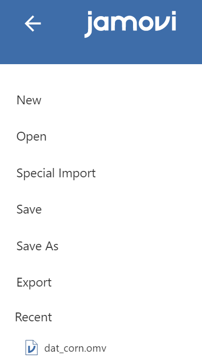

2 LAB I: Introduction to Jamovi
The goal of this lab is to introduce you to jamovi, which we’ll be using throughout the course both to learn the statistical concepts discussed in the course and to analyze real data and come to informed conclusions.
2.1 Downloading and installing Jamovi
Jamovi is available for Windows (64-bit), macOS, Linux and ChromeOS. Installation on desktop is quite straight-forward. Just go to the Jamovi download page https://www.jamovi.org/download.html, and download the latest version (current release) for your operating system.
2.2 Navigating Jamovi
When first starting jamovi, we will be presented with a user interface which looks something like this Figure 2.1.
To the left is the spreadsheet view, and to the right is where the results of statistical tests appear. Down the middle is a bar separating these two regions, and this can be dragged to the left or the right to change their sizes.
Let’s take a quick look at the Jamovi Main Menu, referred to hereafter as the Menu, as shown in (Figure 2.2). This Menu is displayed at the very top of the Jamovi screen:

There are six tabs in the Menu (from left to right):
- File tab (a layer with three horizontal levels \(\equiv\)): this tab allows us to open/import existing files, save and export our files.
- Variables tab: this allows us to view and search our variables in a list view
- Data tab: here we will see our raw data. We can also manipulate our data and add new variables when necessary.
- Analyses tab: in this tab we will carry out our data analyses
- Edit tab: this tab allows us to add extra information to our results. This will help us keep track of what we have done and why.
- Preferences (the three dots \(\vdots\) at the top right of the window)
It is possible to simply begin typing values into the Jamovi spreadsheet as you would any other spreadsheet software. Alternatively, existing data sets in a range of formats (CSV, Excel, SPSS, R data, Stata, SAS) can be opened in Jamovi.
To open a file, select the File tab at the top left hand corner, select ‘Open’ and then ‘This PC’, and choose from the files listed on ‘Browse’ that are stored on our computer.
| Menu tab | Toolbar |
|---|---|
|
 We see six commands appear. With the file tab, we can open, save, or export what we performed in Jamovi. |
|
In the Variable tab, we are shown a list view of all the variables in your dataset. This view allows us to easily navigate your variables and do the following:
|
|
In the Data tab, we can explore our raw data, which is organised like Excel in rows and columns. This tab allows us to manipulate our data and get our dataset ready for use. Specifically, this tab allows us to do the following:
|
|
We can see a toolbar with buttons such as Exploration, T-Tests, ANOVA, and more. For example, if you want to perform regression analysis, we simply click the 'Regression' button. |
|
Edit tab includes a toolbar similar to a word processor. We can add extra information to our results using the buttons. |
|
 We can apply our preferences for a number of settings such as the number of decimal places in the results of the analyses, and amendments to the plots etc. We can apply our preferences for a number of settings such as the number of decimal places in the results of the analyses, and amendments to the plots etc. |